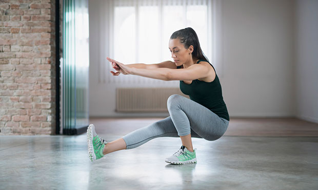
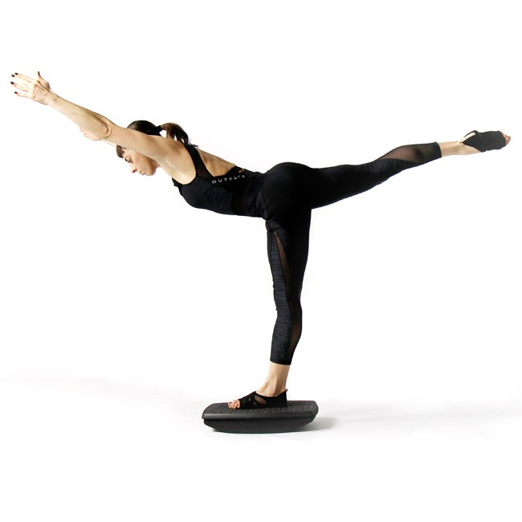
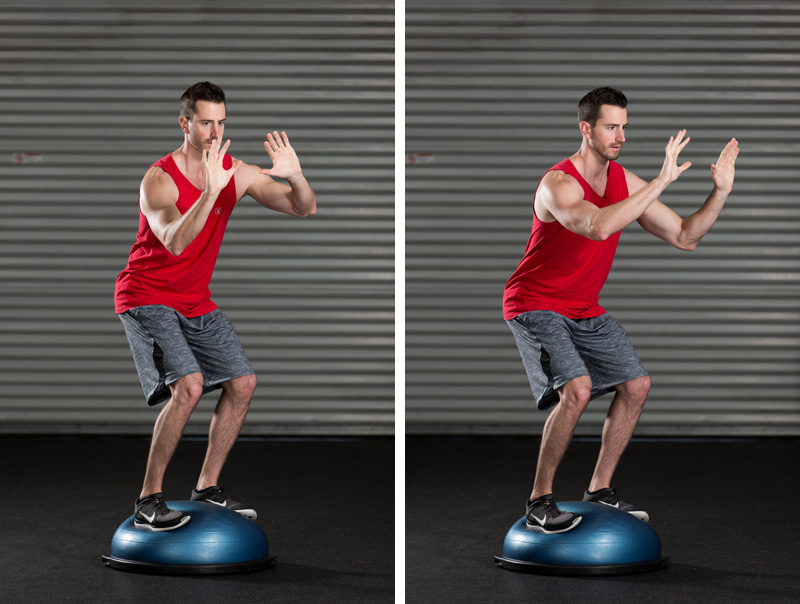

Balance Exercise
Balance exercise is one of the four types of exercise along with strength, endurance and flexibility. Ideally, all four types of exercise would be included in a healthy workout routine and AHA provides easy-to-follow guidelines for endurance and strength-training in its Recommendations for Physical Activity in Adults.
They don’t all need to be done every day, but variety helps keep the body fit and healthy, and makes exercise interesting. You can do a variety of exercises to keep the body fit and healthy and to keep your physical activity routine exciting. Many different types of exercises can improve strength, endurance, flexibility, and balance. For example, practicing yoga can improve your balance, strength, and flexibility. A lot of lower-body strength-training exercises also will improve your balance.
Having good balance is important for many activities we do every day, such as walking and going up and down the stairs. Exercises that improve balance can help prevent falls, a common problem in older adults and stroke patients. They can also benefit those who are obese since weight is not always carried or distributed evenly throughout the body. A loss of balance can occur when standing or moving suddenly. Often we are not fully aware that we may have weak balance until we try balance exercises.
-

How much do I need?
Balance exercises can be done every day or as many days as you like and as often as you like. Preferably, older adults at risk of falls should do balance training 3 or more days a week and do standardized exercises from a program demonstrated to reduce falls. It’s not known whether different combinations of type, amount, or frequency of activity can reduce falls to a greater degree. If you think you might be at risk of falling, talk to your doctor. Tai chi exercises also may help prevent falls. Balance, strength and flexibility exercises can be combined.
-

Examples of balance exercises!!
Standing with your weight on one leg and raising the other leg to the side or behind you
Putting your heel right in front of your toe, like walking a tightrope
Standing up and sitting down from a chair without using your hands
Walking while alternating knee lifts with each step
Doing tai chi or yoga
Using equipment, like a Bosu, which has an inflatable dome on top of a circular platform, which challenges your balance
Holding the position for a longer amount of time
Adding movement to a pose
Closing your eyes -

When to do ?
Try standing on one foot while working in the kitchen, waiting in line or brushing your teeth. Walk heel to toe around the house or office. Yoga and Tai Chi do not require expensive classes or equipment. Find an instructional book, DVD or website to get started at home. Local recreation centers and senior centers may also offer free or low-cost classes.
You can do balance exercises as often as you'd like, even every day. Add in two days a week of strength training, which also helps improve your balance by working the muscles that keep you stable.
Try these balance exercises:
See how long you can stand on one foot, or try holding for 10 seconds on each side.
Walk heel to toe for 20 steps. Steady yourself with a wall if you need a little extra support.
Walk normally in as straight a line as you can.
If you find standing on one foot very challenging at first, try this progression to improve your balance:
Hold on to a wall or sturdy chair with both hands to support yourself.
Next, hold on with only one hand.
Then support yourself with only one finger.
When you are steady on your feet, try balancing with no support at all.
Benefits of doing balance exercise!!
Prevents falls
Reduces the risk of lower-extremity injuries, such as knee and ankle injuries
Improves proprioception (the ability to know where you are in space)
Reversing age-related loss,Building better posture
Allowing faster recovery from injury,Improving coordination
Maximizing your workout time,Improving running technique
Increasing muscular power
What if I’m recovering from a cardiac event or stroke?
Some people are afraid to exercise after a heart attack. But regular physical activity can help reduce your chances of having another heart attack. The AHA published a statement in 2014 that doctors should prescribe exercise to stroke patients since there is strong evidence that physical activity and exercise after stroke can improve cardiovascular fitness, walking ability and upper arm strength. If you’ve had a heart attack or stroke, talk with your doctor before starting any exercise to be sure you’re following a safe, effective physical activity program.